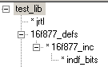

JAL software routines
General considerations
|
 |
JRTL is a standard extension of the JAL compiler (implements things like multiply) 16F877_DEFS definies pragmas and includes inc-file 16F877_INC, automatic translated inc-file, which includes INDF_BITS INDF_BITS, a great library, written by Javi, to read/write any bit/byte in any bank (Because the inc-files makes almost every register-variable available (through INDF_BITS), you'll hardly need this library explicit) |